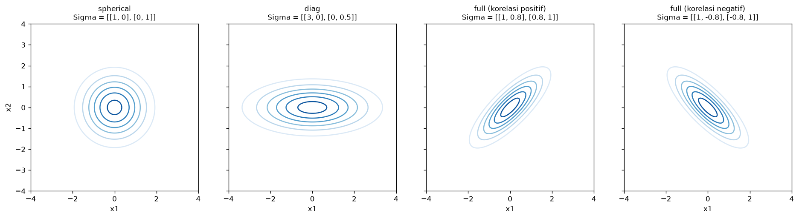
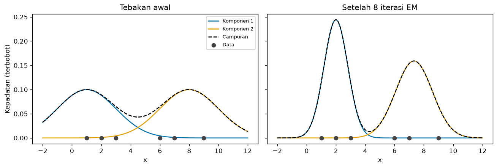
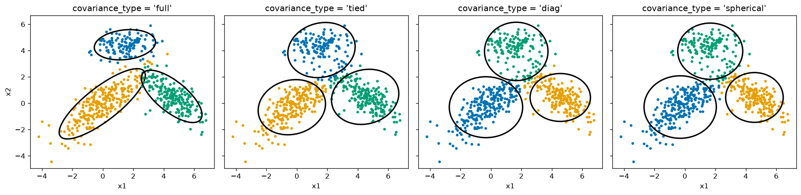
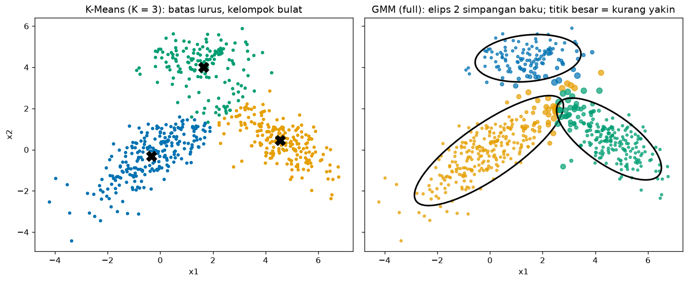
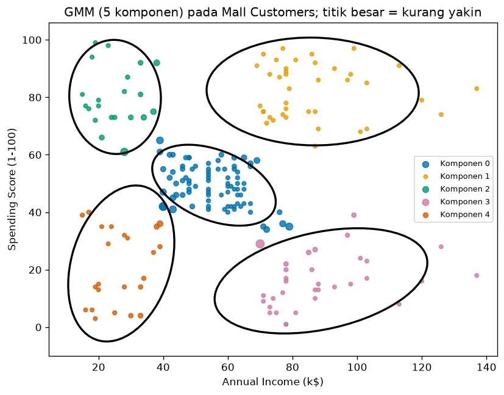

Bab 5 — Gaussian Mixture Models (GMM)¶
Learning Objectives¶
Setelah mempelajari bab ini, kamu mampu:
- Menjelaskan ide model-based clustering dan Gaussian Mixture Model (GMM).
- Menjelaskan distribusi Gaussian satu dimensi dan multivariat, termasuk peran rata-rata dan matriks kovarians.
- Membedakan hard clustering dan soft clustering, serta membaca peluang keanggotaan (responsibilities).
- Menjelaskan algoritma Expectation-Maximization (EM): E-step dan M-step.
- Menghitung satu iterasi EM secara manual pada data kecil.
- Membedakan empat tipe kovarians:
full,tied,diag, danspherical. - Memakai
GaussianMixturedengan parametern_components,covariance_type,max_iter,tol,reg_covar, danrandom_state. - Menjelaskan bahwa label GMM diturunkan dari peluang komponen.
- Membedakan GMM dari K-Means secara konseptual dan matematis.
- Menggambar komponen Gaussian dan membaca ketidakpastian keanggotaan.
Introduction¶
Bayangkan sebuah toko menjual sepatu, dan kamu mengukur panjang kaki semua pembeli. Histogramnya berpuncak dua: satu puncak untuk pembeli dewasa perempuan, satu lagi untuk pembeli dewasa laki-laki. Kamu tidak diberi tahu siapa termasuk golongan mana. Tetapi kamu bisa membayangkan bahwa data ini dihasilkan oleh dua kelompok, masing-masing dengan sebaran berbentuk lonceng. Pembeli yang panjang kakinya berada di tengah-tengah dua lonceng itu tidak jelas masuk yang mana: mungkin 60% dari kelompok pertama dan 40% dari yang kedua.
Itulah ide Gaussian Mixture Model (GMM):
- Data dianggap berasal dari campuran beberapa distribusi Gaussian (lonceng), satu per kelompok.
- Algoritma memperkirakan parameter tiap lonceng: letaknya (rata-rata), lebar dan bentuknya (kovarians), dan seberapa besar porsinya (bobot).
- Hasilnya soft clustering: tiap titik mendapat peluang untuk tiap kelompok, bukan hanya satu nomor.
GMM adalah model probabilitas. Pendekatannya disebut model-based clustering: kita mengasumsikan sebuah model tentang bagaimana data dibangkitkan, lalu mencocokkan model itu ke data. Label kelompok yang kita lihat hanyalah turunan dari peluang model.
Prasyarat
Bab ini memakai centroid sebagai rata-rata (Level 3), K-Means (Bab 2), dan sedikit ide peluang dan matriks. Bab ini lebih banyak berisi rumus daripada bab lain. Semuanya dijelaskan bertahap dengan angka.
Fundamental Concepts¶
| Istilah | Arti |
|---|---|
| Gaussian (normal) distribution | Distribusi berbentuk lonceng, ditentukan oleh rata-rata dan sebaran |
| Mixture model | Model yang menggabungkan beberapa distribusi sederhana menjadi satu |
| Component | Satu distribusi Gaussian di dalam campuran. Satu komponen ≈ satu kelompok |
| Mean \( \mu_k \) | Pusat komponen \( k \) |
| Covariance \( \Sigma_k \) | Matriks yang menentukan lebar, bentuk, dan kemiringan komponen \( k \) |
| Weight (mixing coefficient) \( \pi_k \) | Porsi komponen \( k \) dalam campuran. Semua bobot berjumlah 1 |
| Responsibility \( r_{ik} \) | Peluang bahwa titik \( i \) dibangkitkan oleh komponen \( k \). Inilah peluang keanggotaan |
| Hard clustering | Setiap titik masuk satu kelompok |
| Soft clustering | Setiap titik punya peluang untuk setiap kelompok |
| Likelihood | Seberapa besar peluang data yang kita amati, menurut parameter model |
| EM (Expectation-Maximization) | Algoritma yang bergantian menghitung responsibilities (E-step) dan memperbarui parameter (M-step) |
covariance_type |
Pilihan bentuk matriks kovarians: full, tied, diag, spherical |
Detailed Explanation¶
Distribusi Gaussian satu dimensi¶
Distribusi Gaussian satu dimensi ditentukan oleh dua angka: rata-rata \( \mu \) (letak puncak) dan varians \( \sigma^2 \) (seberapa lebar). Makin besar varians, makin lebar dan pendek loncengnya. Kurva ini adalah kepadatan peluang: tinggi kurva menunjukkan seberapa mungkin nilai di sekitar titik itu muncul.
Distribusi Gaussian multivariat¶
Pada data dengan beberapa fitur, rata-rata menjadi vektor \( \mu \) (satu angka per fitur) dan varians menjadi matriks kovarians \( \Sigma \). Matriks ini menyimpan dua hal:
- Diagonal: varians tiap fitur (seberapa lebar sebaran ke arah fitur itu).
- Di luar diagonal: kovarians antar-fitur (apakah dua fitur cenderung naik bersama atau berlawanan). Inilah yang memiringkan elips.
Pada dua dimensi, garis kontur sebuah Gaussian berbentuk elips. Bentuk elipsnya ditentukan oleh \( \Sigma \):

- Spherical: lingkaran (varians sama ke semua arah).
- Diag: elips sejajar sumbu (varians tiap fitur berbeda, tanpa kemiringan).
- Full: elips yang boleh miring (ada korelasi antar-fitur).
Campuran Gaussian¶
Satu Gaussian hanya bisa menggambarkan satu gerombol. Campuran Gaussian menjumlahkan \( K \) Gaussian, masing-masing dibobot dengan porsinya. Cara membayangkannya sebagai proses pembangkitan data:
- Pilih sebuah komponen \( k \) secara acak, dengan peluang \( \pi_k \) (komponen besar lebih sering terpilih).
- Ambil satu titik dari Gaussian komponen itu.
- Ulangi sebanyak \( n \) kali.
Tugas GMM adalah membalik proses itu: dari titik-titik yang kita lihat, tebak \( \pi_k \), \( \mu_k \), dan \( \Sigma_k \) yang paling mungkin menghasilkannya. Kita tidak tahu titik mana berasal dari komponen mana. Itulah yang membuat soal ini menarik, dan itulah yang dikerjakan EM.
Soft clustering: peluang keanggotaan¶
Setelah parameter diketahui, untuk tiap titik kita bisa menghitung peluang tiap komponen "bertanggung jawab" atas titik itu, yaitu responsibility \( r_{ik} \). Titik di dekat pusat sebuah komponen hampir pasti milik komponen itu (peluang mendekati 1). Titik di antara dua komponen memiliki peluang terbagi, misalnya 0,5 dan 0,5.
Label yang kamu dapat dari predict hanyalah komponen dengan peluang terbesar. Jadi label GMM diturunkan dari peluang. Peluangnya adalah informasi aslinya.
Algoritma EM, secara intuitif¶
Masalahnya seperti ayam dan telur:
- Jika kita tahu titik mana milik komponen mana, menghitung rata-rata dan kovarians tiap komponen mudah.
- Jika kita tahu parameter tiap komponen, menghitung peluang keanggotaan tiap titik mudah.
Kita tidak tahu keduanya. EM memecahkannya dengan bergantian:
- Mulai dengan tebakan parameter (di scikit-learn, bawaannya dari hasil K-Means).
- E-step (Expectation): dengan parameter saat ini, hitung responsibility tiap titik terhadap tiap komponen.
- M-step (Maximization): dengan responsibility itu sebagai "keanggotaan sebagian", hitung ulang bobot, rata-rata, dan kovarians tiap komponen.
- Ulangi langkah 2 dan 3 sampai peningkatan log-likelihood sangat kecil (di bawah
tol) atau iterasi mencapaimax_iter.
flowchart TD
A[Tebakan awal<br/>bobot, rata-rata, kovarians] --> B[E-step: hitung responsibility<br/>tiap titik untuk tiap komponen]
B --> C[M-step: perbarui bobot,<br/>rata-rata, dan kovarians]
C --> D{Peningkatan log-likelihood<br/>lebih kecil dari tol?}
D -- Belum --> B
D -- Ya --> E[Selesai: model GMM]Perbandingan dengan K-Means (Bab 2): langkah assignment K-Means mirip E-step, dan langkah update mirip M-step. Bedanya, K-Means memasukkan titik ke satu kelompok (keanggotaan 0 atau 1), sedangkan EM memberi keanggotaan sebagian (peluang).
Contoh manual satu iterasi EM (satu dimensi)¶
Enam titik: \( x = 1, 2, 3, 6, 7, 9 \). Kita tebak dua komponen: \( \mu_1 = 1 \), \( \mu_2 = 8 \), varians \( \sigma_1^2 = \sigma_2^2 = 4 \), dan bobot \( \pi_1 = \pi_2 = 0{,}5 \).
E-step untuk titik \( x = 3 \). Hitung kepadatan Gaussian tiap komponen:
- \( \mathcal{N}(3 \mid 1, 4) = \frac{1}{\sqrt{2\pi \cdot 4}} \exp\left(-\frac{(3-1)^2}{2 \cdot 4}\right) = 0{,}19947 \times e^{-0{,}5} \approx 0{,}12099 \)
- \( \mathcal{N}(3 \mid 8, 4) = 0{,}19947 \times \exp\left(-\frac{25}{8}\right) \approx 0{,}00876 \)
Kalikan dengan bobot (keduanya 0,5), lalu normalkan:
Titik \( x = 3 \) "milik" komponen 1 dengan peluang sekitar 93,25% dan komponen 2 sekitar 6,75%. Dengan cara yang sama kita hitung semua titik (tabel ada di bagian Expected Output).
M-step. Dengan semua responsibility, hitung ulang parameter. Misalnya total tanggung jawab komponen 1 adalah \( N_1 = \sum_i r_{i1} \approx 2{,}998 \), sehingga:
- Bobot baru: \( \pi_1 = N_1 / 6 \approx 0{,}4997 \).
- Rata-rata baru: rata-rata titik yang dibobot oleh \( r_{i1} \). Hasilnya \( \mu_1 \approx 2{,}090 \), jauh lebih tepat daripada tebakan awal 1.
- Varians baru: rata-rata kuadrat selisih yang dibobot. Hasilnya \( \sigma_1^2 \approx 1{,}106 \), turun dari tebakan awal 4.
Setelah beberapa iterasi, parameter stabil. Seluruh perhitungan ini dilakukan kode di bagian Python Implementation.
Tipe kovarians (covariance_type)¶
Matriks kovarians adalah bagian paling "mahal" dari GMM, karena jumlah parameternya tumbuh cepat dengan jumlah fitur. Scikit-learn menyediakan empat pilihan:
| Tipe | Arti | Bentuk elips | Bentuk covariances_ |
Jumlah parameter kovarians* |
|---|---|---|---|---|
full |
Tiap komponen punya matriks kovarians sendiri, bebas | Elips bebas, boleh miring, tiap komponen berbeda | (K, d, d) |
\( K \cdot d(d+1)/2 \) |
tied |
Semua komponen berbagi satu matriks kovarians bebas | Elips bebas, tetapi sama untuk semua komponen | (d, d) |
\( d(d+1)/2 \) |
diag |
Tiap komponen punya kovarians diagonal | Elips sejajar sumbu, tiap komponen berbeda | (K, d) |
\( K \cdot d \) |
spherical |
Tiap komponen punya satu angka varians | Lingkaran, ukuran tiap komponen berbeda | (K,) |
\( K \) |
* \( K \) adalah jumlah komponen dan \( d \) jumlah fitur.
full paling fleksibel tetapi butuh paling banyak parameter. Makin sedikit parameter (misalnya spherical), makin kaku modelnya, tetapi makin stabil pada data yang sedikit. Pada \( K=3 \) dan \( d=2 \): full memakai 9 parameter kovarians, tied 3, diag 6, dan spherical 3.
Parameter GaussianMixture¶
| Parameter | Bawaan | Arti |
|---|---|---|
n_components |
1 | Jumlah komponen Gaussian (\( K \)). Atur sendiri |
covariance_type |
"full" |
"full", "tied", "diag", atau "spherical" |
max_iter |
100 | Batas iterasi EM untuk satu kali jalan |
tol |
0,001 | Ambang konvergensi: EM berhenti bila peningkatan rata-rata log-likelihood per titik di bawah nilai ini |
reg_covar |
\( 10^{-6} \) | Angka kecil yang ditambahkan ke diagonal kovarians agar matriks tidak "ambruk" (singular) |
n_init |
1 | Jumlah inisialisasi berbeda. Hasil terbaik dipakai |
init_params |
"kmeans" |
Cara membuat tebakan awal: "kmeans", "k-means++", "random", atau "random_from_data" |
random_state |
None |
Seed acak. Atur agar hasil bisa diulang |
Atribut setelah fit:
| Atribut | Isi |
|---|---|
weights_ |
Bobot \( \pi_k \), bentuk (K,) |
means_ |
Rata-rata \( \mu_k \), bentuk (K, d) |
covariances_ |
Kovarians, bentuk bergantung covariance_type |
converged_ |
True jika EM konvergen sebelum max_iter |
n_iter_ |
Jumlah iterasi EM pada jalan terbaik |
Method penting:
| Method | Hasil |
|---|---|
predict(X) |
Label = komponen dengan peluang terbesar |
predict_proba(X) |
Matriks peluang (n, K), tiap baris berjumlah 1 |
score(X) |
Rata-rata log-likelihood per titik |
GMM tidak punya labels_
Berbeda dengan KMeans, objek GaussianMixture tidak punya atribut labels_. Gunakan predict(X) atau fit_predict(X). Ini konsisten dengan bab 1: label GMM adalah turunan dari peluang.
Soal memilih jumlah komponen
Skor yang selalu naik saat \( K \) bertambah (seperti score) tidak bisa dipakai memilih \( K \). Cara menilai dan memilih \( K \) secara formal (misalnya dengan BIC dan AIC) dibahas di Level 5.
Membedakan GMM dari K-Means¶
| K-Means | GMM | |
|---|---|---|
| Jenis | Algoritma geometris (jarak ke centroid) | Model probabilitas (campuran Gaussian) |
| Keanggotaan | Hard (0 atau 1) | Soft (peluang) |
| Bentuk kelompok | Bulat, ukuran mirip | Elips berbagai ukuran dan kemiringan (dengan full) |
| Ukuran kelompok | Tidak dimodelkan | Dimodelkan lewat bobot \( \pi_k \) |
| Yang dioptimalkan | Jumlah kuadrat jarak (WCSS) | Log-likelihood data |
| Langkah inti | Assignment dan update | E-step dan M-step |
| Batas antar-kelompok | Garis lurus | Garis lengkung (kuadratik) untuk full |
| Banyak parameter | Hanya \( K \) centroid | Bobot, rata-rata, kovarians |
K-Means bisa dipandang sebagai kasus pembatas dari GMM: jika semua komponen berkovarians bulat dan sama, dan variansnya menuju nol, responsibilities menjadi 0 atau 1 dan E-step menjadi assignment K-Means (lihat Bishop, 2006, Bab 9.3.2). Jadi GMM adalah generalisasi: lebih fleksibel, tetapi lebih banyak parameter.
Kelebihan dan keterbatasan¶
| Kelebihan | Keterbatasan |
|---|---|
| Memberi peluang keanggotaan (soft clustering) | Harus menentukan \( K \) di awal |
| Mampu menangani kelompok elips dengan ukuran dan kemiringan berbeda | Mengasumsikan tiap kelompok berbentuk Gaussian. Bentuk lain (misalnya bulan sabit) tidak cocok |
| Memodelkan ukuran kelompok lewat bobot | Hasil bergantung inisialisasi (local optimum) |
Punya predict dan predict_proba untuk data baru |
Butuh banyak parameter pada dimensi tinggi (kovarians full) |
Bisa membangkitkan data baru dari model (sample) |
Bisa gagal bila sebuah komponen "ambruk" pada satu titik (singular) |
| Dasar matematikanya jelas | Lebih lambat daripada K-Means |
Mathematical Foundation¶
Gaussian satu dimensi¶
Penjelasan simbol: \( x \) adalah nilai yang diamati, \( \mu \) rata-rata, dan \( \sigma^2 \) varians. Pecahan di depan membuat luas di bawah kurva sama dengan 1. Bagian \( \exp(\cdot) \) turun cepat saat \( x \) menjauhi \( \mu \): selisih \( (x-\mu)^2 \) dibagi \( 2\sigma^2 \).
Contoh angka. Untuk \( x = 3 \), \( \mu = 1 \), \( \sigma^2 = 4 \): \( \frac{1}{\sqrt{8\pi}} \approx 0{,}19947 \) dan \( \exp(-4/8) = e^{-0{,}5} \approx 0{,}60653 \), jadi \( \mathcal{N} \approx 0{,}12099 \), sama dengan output kode.
Gaussian multivariat¶
Untuk \( d \) fitur, dengan vektor titik \( \mathbf{x} \), vektor rata-rata \( \mu \), dan matriks kovarians \( \Sigma \):
Penjelasan:
- \( \lvert \Sigma \rvert \) adalah determinan \( \Sigma \) (ukuran "volume" sebaran). \( \Sigma^{-1} \) adalah invers matriks.
- \( (\mathbf{x}-\mu)^{\top} \Sigma^{-1} (\mathbf{x}-\mu) \) adalah jarak Mahalanobis kuadrat: jarak dari titik ke pusat yang memperhitungkan lebar dan kemiringan sebaran. Arah yang sebarannya lebar "dimaafkan", dan arah yang sempit "dihukum".
Contoh 1 (\( \Sigma = I \), selisih \( (1, 1) \)): determinan 1, jarak Mahalanobis kuadrat \( = 1 + 1 = 2 \), jadi \( \mathcal{N} = \frac{1}{2\pi} e^{-1} \approx 0{,}15915 \times 0{,}36788 \approx 0{,}05855 \), sama dengan output kode.
Contoh 2 (\( \Sigma = \mathrm{diag}(4, 1) \), selisih \( (2, 1) \)): \( \Sigma^{-1} = \mathrm{diag}(\tfrac{1}{4}, 1) \), maka jarak Mahalanobis kuadrat \( = \frac{2^2}{4} + \frac{1^2}{1} = 1 + 1 = 2 \). Selisih 2 pada fitur yang variansnya 4 dianggap sama "jauh" dengan selisih 1 pada fitur yang variansnya 1.
Model campuran¶
Kepadatan sebuah titik di bawah campuran \( K \) komponen:
Tiap komponen menyumbang kepadatan Gaussiannya dikali bobot \( \pi_k \). Bobot berjumlah 1 supaya \( p(\mathbf{x}) \) tetap kepadatan peluang yang sah.
Responsibility (E-step)¶
Pembilang adalah "sumbangan" komponen \( k \) pada titik \( \mathbf{x}_i \), dan penyebut adalah sumbangan semua komponen. Pembagian ini membuat \( \sum_k r_{ik} = 1 \). Ini adalah aturan Bayes: peluang komponen \( k \) setelah melihat titik \( \mathbf{x}_i \).
Label yang dihasilkan: \( c_i = \arg\max_k r_{ik} \).
Contoh angka. Pada titik \( x = 3 \): sumbangan komponen 1 \( = 0{,}5 \times 0{,}12099 = 0{,}06050 \) dan komponen 2 \( = 0{,}5 \times 0{,}00876 = 0{,}00438 \). Jumlahnya \( 0{,}06487 \), sehingga \( r_{31} = 0{,}06050 / 0{,}06487 \approx 0{,}9325 \), cocok dengan tabel di output.
Pembaruan parameter (M-step)¶
Dengan responsibility tetap, parameter baru adalah rata-rata terbobot:
- \( N_k \): "jumlah efektif" titik milik komponen \( k \), yaitu jumlah responsibility-nya.
- \( \pi_k = N_k / n \): bobot adalah porsi titik yang menjadi tanggung jawab komponen \( k \).
- \( \mu_k \): rata-rata semua titik, tetapi titik yang lebih "dimiliki" komponen \( k \) berpengaruh lebih besar. Bandingkan dengan update centroid K-Means (Bab 2): sama, hanya keanggotaannya sebagian, bukan 0 atau 1.
- \( \Sigma_k \): sebaran terbobot di sekitar \( \mu_k \).
Fungsi tujuan: log-likelihood¶
EM berusaha memaksimalkan log-likelihood data:
dengan \( \theta \) adalah seluruh parameter (\( \pi_k, \mu_k, \Sigma_k \)). Nilai ini makin besar (kurang negatif) bila model makin cocok dengan data. Setiap putaran EM (E-step lalu M-step) tidak pernah menurunkan \( \ell \). Pada contoh 1 dimensi kita, log-likelihood naik dari \( -15{,}0389 \) menjadi \( -12{,}9475 \), lalu \( -12{,}7250 \), dan akhirnya menetap di \( -12{,}7235 \). Seperti K-Means, EM hanya menjamin mencapai optimum lokal, bukan global, sehingga n_init dan random_state penting.
Kompleksitas¶
Satu iterasi EM menghitung kepadatan tiap titik untuk tiap komponen. Untuk full, biayanya kira-kira sebanding dengan \( n \cdot K \cdot d^2 \) (ditambah invers matriks \( d \times d \) untuk tiap komponen), sedangkan untuk diag dan spherical kira-kira \( n \cdot K \cdot d \). Jadi full menjadi mahal bila \( d \) besar.
Python Implementation¶
Skrip lengkapnya ada di examples/level-4/05_gaussian_mixture_models.py, dan versi notebook-nya di notebooks/level-4/05-gaussian-mixture-models.ipynb.
Konteks masalah: memahami Gaussian dan EM, lalu memakai GaussianMixture untuk memperoleh label dan peluang keanggotaan.
Dataset:
- 6 titik satu dimensi untuk EM manual.
- Data dua dimensi yang kita bangkitkan sendiri dari tiga Gaussian dengan parameter yang kita tentukan (elips miring, ukuran berbeda, tumpang tindih sebagian). Ini cocok untuk GMM karena sesuai dengan asumsinya, dan karena kita tahu parameter sebenarnya, kita bisa memeriksa apakah GMM menemukannya kembali.
- Mall Customers (200 pelanggan, terskala).
Pustaka: NumPy, pandas, Matplotlib, scikit-learn.
Bagian A — Siapkan alat¶
import warnings
import numpy as np
import pandas as pd
import matplotlib.pyplot as plt
from matplotlib.patches import Ellipse
from sklearn.cluster import KMeans
from sklearn.exceptions import ConvergenceWarning
from sklearn.mixture import GaussianMixture
from sklearn.preprocessing import StandardScaler
Penjelasan: GaussianMixture dari sklearn.mixture adalah algoritmanya. Ellipse dari Matplotlib untuk menggambar elips komponen. ConvergenceWarning dan modul warnings dipakai untuk mengatur peringatan. KMeans dipakai sebagai pembanding.
Bagian B — Gaussian satu dimensi dan multivariat¶
def normal_pdf(x, mean, var):
"""Kepadatan Gaussian satu dimensi N(x | mean, var)."""
return np.exp(-((x - mean) ** 2) / (2 * var)) / np.sqrt(2 * np.pi * var)
print("N(3 | mean=1, var=4) =", round(float(normal_pdf(3, 1, 4)), 5))
print("N(3 | mean=8, var=4) =", round(float(normal_pdf(3, 8, 4)), 5))
Penjelasan: fungsi normal_pdf adalah rumus Gaussian satu dimensi: np.exp(...) untuk bagian eksponen, dan np.sqrt(2 * np.pi * var) untuk penyebut. Kita menghitung dua nilai yang sama dengan contoh manual: \( \mathcal{N}(3 \mid 1, 4) \approx 0{,}121 \) dan \( \mathcal{N}(3 \mid 8, 4) \approx 0{,}00876 \).
def mvn_pdf(X, mean, cov):
"""Kepadatan Gaussian multivariat. X berbentuk (n, d), mean (d,), cov (d, d)."""
d = len(mean)
diff = X - mean
inv_cov = np.linalg.inv(cov)
# Jarak Mahalanobis kuadrat tiap baris: (x - mean)^T Sigma^-1 (x - mean)
mahalanobis_sq = np.einsum("ij,jk,ik->i", diff, inv_cov, diff)
norm_const = 1.0 / np.sqrt((2 * np.pi) ** d * np.linalg.det(cov))
return norm_const * np.exp(-0.5 * mahalanobis_sq)
point = np.array([[1.0, 1.0]])
print("Sigma = I, selisih (1, 1):", round(float(mvn_pdf(point, np.zeros(2), np.eye(2))[0]), 5))
diff = np.array([[2.0, 1.0]])
cov_diag = np.diag([4.0, 1.0])
m_sq = float(np.einsum("ij,jk,ik->i", diff, np.linalg.inv(cov_diag), diff)[0])
print("Sigma = diag(4, 1), selisih (2, 1): jarak Mahalanobis kuadrat =", m_sq)
Penjelasan:
mvn_pdf(X, mean, cov)menghitung kepadatan Gaussian multivariat untuk banyak titik sekaligus.diff = X - meanadalah selisih tiap titik dari pusat.np.linalg.inv(cov)adalah invers kovarians.np.einsum("ij,jk,ik->i", diff, inv_cov, diff)menghitung \( (\mathbf{x}-\mu)^\top \Sigma^{-1} (\mathbf{x}-\mu) \) untuk setiap baris. Tulisan"ij,jk,ik->i"berarti: kalikandiff(indeksi, j),inv_cov(indeksj, k), dandifflagi (indeksi, k), lalu jumlahkan indeksjdank, tersisa satu angka per barisi.np.linalg.det(cov)adalah determinan.norm_constadalah pecahan di depan rumus.- Dua contoh di bawahnya mengecek hasil dengan contoh manual: \( 0{,}05855 \) dan jarak Mahalanobis kuadrat \( 2{,}0 \).
grid_x, grid_y = np.meshgrid(np.linspace(-4, 4, 200), np.linspace(-4, 4, 200))
grid = np.column_stack([grid_x.ravel(), grid_y.ravel()])
shapes = {
"spherical\nSigma = [[1, 0], [0, 1]]": np.array([[1.0, 0.0], [0.0, 1.0]]),
"diag\nSigma = [[3, 0], [0, 0.5]]": np.array([[3.0, 0.0], [0.0, 0.5]]),
"full (korelasi positif)\nSigma = [[1, 0.8], [0.8, 1]]": np.array([[1.0, 0.8], [0.8, 1.0]]),
"full (korelasi negatif)\nSigma = [[1, -0.8], [-0.8, 1]]": np.array([[1.0, -0.8], [-0.8, 1.0]]),
}
fig, axes = plt.subplots(1, 4, figsize=(16, 4), sharex=True, sharey=True)
for ax, (title, cov) in zip(axes, shapes.items()):
density = mvn_pdf(grid, np.zeros(2), cov).reshape(grid_x.shape)
ax.contour(grid_x, grid_y, density, levels=6, cmap="Blues")
ax.set_title(title, fontsize=10)
ax.set_xlabel("x1")
ax.set_aspect("equal")
axes[0].set_ylabel("x2")
plt.tight_layout()
plt.show()
Penjelasan: np.meshgrid membuat kisi titik di bidang dari \(-4\) sampai \(4\). grid meratakannya menjadi daftar titik (40000, 2). Untuk tiap bentuk kovarians kita hitung kepadatan di semua titik kisi, lalu ax.contour(...) menggambar garis kontur. ax.set_aspect("equal") membuat skala x dan y sama supaya lingkaran tampak bulat.
Bagian C — Algoritma EM dari nol (satu dimensi)¶
x = np.array([1.0, 2.0, 3.0, 6.0, 7.0, 9.0]) # enam titik satu dimensi
# Tebakan awal untuk dua komponen
means = np.array([1.0, 8.0])
variances = np.array([4.0, 4.0])
weights = np.array([0.5, 0.5])
initial_params = (means.copy(), variances.copy(), weights.copy())
for iteration in range(1, 9):
# E-step: peluang tiap komponen "bertanggung jawab" atas tiap titik
weighted_density = weights * normal_pdf(x[:, None], means, variances) # bentuk (6, 2)
log_likelihood = np.log(weighted_density.sum(axis=1)).sum()
responsibilities = weighted_density / weighted_density.sum(axis=1, keepdims=True)
# M-step: hitung ulang parameter berdasarkan tanggung jawab itu
n_k = responsibilities.sum(axis=0)
weights = n_k / len(x)
means = (responsibilities * x[:, None]).sum(axis=0) / n_k
variances = (responsibilities * (x[:, None] - means) ** 2).sum(axis=0) / n_k
print(f"Iterasi {iteration}: log-likelihood = {log_likelihood:8.4f} | "
f"means = {means.round(4).tolist()} | variances = {variances.round(4).tolist()} | "
f"weights = {weights.round(4).tolist()}")
if iteration == 1:
print(" Tanggung jawab (kolom: komponen 1, komponen 2) pada iterasi 1:")
print(pd.DataFrame(responsibilities, index=x, columns=["r_1", "r_2"]).round(4).to_string())
Penjelasan baris demi baris:
xadalah enam titik.means,variances,weightsadalah tebakan awal untuk dua komponen.initial_paramsmenyimpan salinannya (.copy()), karena nanti array aslinya diperbarui.x[:, None]mengubahxdari bentuk(6,)menjadi(6, 1). Denganmeansberbentuk(2,), broadcasting menghasilkan matriks(6, 2): kepadatan tiap titik untuk tiap komponen.- E-step:
weighted_density = weights * normal_pdf(...)mengalikan kepadatan dengan bobot komponen (\( \pi_k \mathcal{N}(\cdot) \)).log_likelihood = np.log(weighted_density.sum(axis=1)).sum()menjumlahkan sumbangan semua komponen per titik, mengambil logaritma, lalu menjumlahkan semua titik.responsibilities = weighted_density / weighted_density.sum(axis=1, keepdims=True)membagi tiap baris dengan jumlah barisnya.keepdims=Truemempertahankan bentuk(6, 1)agar pembagian bisa dilakukan baris demi baris.
- M-step:
n_k = responsibilities.sum(axis=0)adalah \( N_k \), jumlah responsibility tiap komponen.weights = n_k / len(x).means = (responsibilities * x[:, None]).sum(axis=0) / n_kadalah rata-rata terbobot.variances = (responsibilities * (x[:, None] - means) ** 2).sum(axis=0) / n_kadalah varians terbobot, memakai rata-rata yang baru.
print(...)menampilkan log-likelihood dan parameter tiap iterasi. Pada iterasi pertama kita juga mencetak tabel responsibility.
xs = np.linspace(-2, 12, 400)
fig, axes = plt.subplots(1, 2, figsize=(11, 3.8), sharey=True)
for ax, (m, v, w), title in zip(
axes, [initial_params, (means, variances, weights)], ["Tebakan awal", "Setelah 8 iterasi EM"]
):
for k, color in enumerate(["#0072B2", "#E69F00"]):
ax.plot(xs, w[k] * normal_pdf(xs, m[k], v[k]), color=color, label=f"Komponen {k + 1}")
ax.plot(xs, sum(w[k] * normal_pdf(xs, m[k], v[k]) for k in range(2)), color="black", linestyle="--",
label="Campuran")
ax.scatter(x, np.zeros_like(x), color="#444444", zorder=3, label="Data")
ax.set_title(title)
ax.set_xlabel("x")
axes[0].set_ylabel("Kepadatan (terbobot)")
axes[0].legend(fontsize=8)
plt.tight_layout()
plt.show()
Penjelasan: dua panel: tebakan awal dan hasil setelah 8 iterasi. Tiap komponen digambar sebagai kurva terbobot (w[k] * normal_pdf(...)), dan garis putus-putus hitam adalah campurannya (jumlah kedua kurva). Titik-titik data digambar di sumbu bawah.
# Scikit-learn dengan tebakan awal yang sama, dibiarkan konvergen
gm_1d = GaussianMixture(
n_components=2, means_init=[[1.0], [8.0]], weights_init=[0.5, 0.5],
precisions_init=[[[0.25]], [[0.25]]], tol=1e-8, max_iter=500,
).fit(x[:, None])
print("scikit-learn means :", gm_1d.means_.ravel().round(4).tolist())
print("scikit-learn variances:", gm_1d.covariances_.ravel().round(4).tolist())
print("scikit-learn weights :", gm_1d.weights_.round(4).tolist())
print("scikit-learn log-likelihood total:", round(gm_1d.score(x[:, None]) * len(x), 4))
Penjelasan: kita menjalankan GaussianMixture scikit-learn dengan tebakan awal yang sama (means_init, weights_init, precisions_init; presisi adalah 1/varians \( = 1/4 = 0{,}25 \)) dan tol sangat kecil supaya konvergen penuh, lalu membandingkan hasilnya dengan EM buatan sendiri. gm_1d.score(x[:, None]) * len(x) mengubah rata-rata log-likelihood per titik menjadi total.
Bagian D — Data dua dimensi berbentuk elips¶
# Data dua dimensi yang diambil dari tiga distribusi Gaussian yang kita tentukan sendiri.
# Tiap kelompok berbentuk elips berbeda, ukurannya berbeda, dan sebagian saling tumpang tindih.
rng = np.random.default_rng(42)
true_components = [
# (jumlah titik, rata-rata, matriks kovarians)
(270, [0.0, 0.0], [[2.0, 1.6], [1.6, 2.0]]), # elips miring ke kanan atas, besar
(120, [1.5, 4.5], [[1.0, 0.0], [0.0, 0.3]]), # elips mendatar, kecil
(210, [4.5, 0.5], [[1.2, -0.7], [-0.7, 0.9]]), # elips miring ke kanan bawah
]
X = np.vstack([rng.multivariate_normal(mean, cov, size=n) for n, mean, cov in true_components])
print("Bentuk X:", X.shape)
Penjelasan: true_components mendaftar tiga komponen yang kita pakai membangkitkan data: jumlah titik, rata-rata, dan matriks kovarians. rng.multivariate_normal(mean, cov, size=n) mengambil n titik dari Gaussian dengan parameter itu. np.vstack menumpuk ketiganya menjadi X berisi 600 titik. Komentar pada tiap baris menjelaskan bentuk elipsnya.
palette = ["#0072B2", "#E69F00", "#009E73", "#CC79A7", "#D55E00", "#56B4E9"]
def full_covariances(gmm):
"""Mengubah atribut covariances_ dari tipe apa pun menjadi matriks penuh (K, d, d)."""
k, d = gmm.n_components, gmm.means_.shape[1]
kind = gmm.covariance_type
if kind == "full":
return gmm.covariances_
if kind == "tied":
return np.array([gmm.covariances_] * k)
if kind == "diag":
return np.array([np.diag(c) for c in gmm.covariances_])
return np.array([np.eye(d) * c for c in gmm.covariances_]) # spherical
def draw_ellipse(ax, mean, cov, color, n_std=2.0):
"""Menggambar elips n_std simpangan baku dari sebuah Gaussian."""
values, vectors = np.linalg.eigh(cov)
order = values.argsort()[::-1]
values, vectors = values[order], vectors[:, order]
angle = np.degrees(np.arctan2(vectors[1, 0], vectors[0, 0]))
width, height = 2 * n_std * np.sqrt(values)
ax.add_patch(Ellipse(mean, width, height, angle=angle, fill=False, edgecolor=color, linewidth=2))
Penjelasan:
full_covariances(gmm)mengubahcovariances_dari tipe apa pun (bentuk(K,),(K, d),(d, d), atau(K, d, d)) menjadi matriks penuh(K, d, d), supaya satu fungsi gambar bisa dipakai untuk semuanya.np.diag(c)membuat matriks diagonal, dannp.eye(d) * cmembuat matriks identitas dikali varians.draw_ellipsemenggambar elips pada \( n \) simpangan baku.np.linalg.eigh(cov)menguraikan kovarians menjadi nilai eigen (varians sepanjang sumbu utama elips) dan vektor eigen (arah sumbu utama). Panjang sumbu adalah2 * n_std * sqrt(nilai eigen), dan sudut kemiringan dihitung dari vektor eigen terbesar dengannp.arctan2.
Bagian E — GMM scikit-learn¶
gmm = GaussianMixture(
n_components=3, covariance_type="full", max_iter=100, tol=1e-3,
reg_covar=1e-6, n_init=5, random_state=42,
)
gmm.fit(X)
print("Konvergen? :", gmm.converged_)
print("Iterasi (n_iter_) :", gmm.n_iter_)
print("weights_ :", gmm.weights_.round(3).tolist())
print("means_ (bentuk) :", gmm.means_.shape)
print("covariances_ (bentuk):", gmm.covariances_.shape)
print("Rata-rata log-likelihood per titik:", round(gmm.score(X), 4))
# Urutkan komponen menurut x1 supaya mudah dibandingkan dengan parameter pembangkit data
order = np.argsort(gmm.means_[:, 0])
true_weights = np.array([n for n, _, _ in true_components]) / len(X)
true_means = np.array([m for _, m, _ in true_components])
print("\nBobot sebenarnya :", true_weights.round(3).tolist())
print("Bobot hasil GMM :", gmm.weights_[order].round(3).tolist())
print("Rata-rata sebenarnya:\n", true_means)
print("Rata-rata hasil GMM :\n", gmm.means_[order].round(2))
Penjelasan:
GaussianMixture(n_components=3, covariance_type="full", ...)mengatur parameter yang dibahas.n_init=5menjalankan EM dari 5 awal berbeda dan mengambil yang terbaik.gmm.fit(X)menjalankan EM. Setelahnya kita membacaconverged_,n_iter_,weights_, bentukmeans_dancovariances_, danscore(X).np.argsort(gmm.means_[:, 0])mengurutkan komponen menurutx1. Nomor komponen GMM sembarang, jadi kita urutkan sebelum membandingkannya dengan parameter sebenarnya.
labels_gmm = gmm.predict(X)
proba = gmm.predict_proba(X)
print("Ukuran tiap komponen:", np.bincount(labels_gmm).tolist())
print("\nPeluang lima titik pertama (tiap baris berjumlah 1):")
print(pd.DataFrame(proba[:5], columns=["p_0", "p_1", "p_2"]).round(3).to_string())
print("Jumlah tiap baris:", proba[:5].sum(axis=1).round(6).tolist())
print("\nlabel = argmax(peluang) untuk semua titik?", np.array_equal(labels_gmm, proba.argmax(axis=1)))
confidence = proba.max(axis=1)
print(f"Titik dengan peluang tertinggi < 0.9: {int((confidence < 0.9).sum())} dari {len(X)}")
print(f"Titik dengan peluang tertinggi < 0.6: {int((confidence < 0.6).sum())} dari {len(X)}")
Penjelasan:
gmm.predict(X)memberi label,gmm.predict_proba(X)memberi matriks peluang(600, 3).proba[:5].sum(axis=1)membuktikan tiap baris berjumlah 1.np.array_equal(labels_gmm, proba.argmax(axis=1))membuktikan label sama dengan komponen berpeluang terbesar. Inilah arti "label GMM diturunkan dari peluang".confidence = proba.max(axis=1)adalah peluang tertinggi tiap titik, yaitu seberapa yakin model. Kita menghitung berapa titik yang keyakinannya di bawah 0,9 dan 0,6.
# Hitung peluang keanggotaan sendiri dengan rumus: r_ik = pi_k * N(x_i | mu_k, Sigma_k) / jumlah
weighted = np.column_stack(
[gmm.weights_[k] * mvn_pdf(X, gmm.means_[k], gmm.covariances_[k]) for k in range(3)]
)
manual_proba = weighted / weighted.sum(axis=1, keepdims=True)
print("Selisih terbesar dengan predict_proba:", float(np.abs(manual_proba - proba).max()))
Penjelasan: kita menghitung responsibility sendiri dengan rumus E-step memakai mvn_pdf dan parameter hasil gmm. Perulangan [... for k in range(3)] membuat satu kolom per komponen, np.column_stack menyatukannya, dan pembagian dengan jumlah baris menormalkan. Lalu kita ambil selisih terbesar dengan predict_proba.
print("max_iter -> n_iter_, konvergen?, rata-rata log-likelihood per titik (tol sangat kecil)")
with warnings.catch_warnings():
warnings.simplefilter("ignore", category=ConvergenceWarning) # abaikan peringatan "belum konvergen"
for max_iter in [1, 2, 3, 5, 10, 20, 50]:
model = GaussianMixture(n_components=3, max_iter=max_iter, tol=1e-8,
n_init=1, random_state=0).fit(X)
print(f"max_iter = {max_iter:<3} -> n_iter_ = {model.n_iter_:<3} konvergen = {str(model.converged_):<5} "
f"log-likelihood = {model.score(X):.4f}")
Penjelasan: kita menjalankan GMM dengan max_iter = 1, 2, 3, 5, 10, 20, 50 dan tol=1e-8 (sangat ketat, agar tidak berhenti dini). warnings.catch_warnings() dan simplefilter("ignore", ...) menyembunyikan ConvergenceWarning yang wajar muncul ketika max_iter terlalu kecil. Kita mencetak n_iter_, converged_, dan log-likelihood tiap kali.
Bagian F — Empat tipe kovarians¶
n_samples, d = X.shape
k = 3
param_formula = {
"full": k * d * (d + 1) // 2,
"tied": d * (d + 1) // 2,
"diag": k * d,
"spherical": k,
}
models = {}
for kind in ["full", "tied", "diag", "spherical"]:
models[kind] = GaussianMixture(n_components=3, covariance_type=kind, n_init=5, random_state=42).fit(X)
print(f"{kind:<10} covariances_ bentuk = {str(models[kind].covariances_.shape):<10} "
f"parameter kovarians = {param_formula[kind]:<2} ukuran komponen = "
f"{np.bincount(models[kind].predict(X)).tolist()}")
Penjelasan: param_formula menghitung jumlah parameter kovarians dengan rumus pada tabel. Perulangan melatih satu model untuk tiap covariance_type, dan mencetak bentuk covariances_ serta ukuran komponen. // adalah pembagian bulat.
fig, axes = plt.subplots(1, 4, figsize=(16, 4), sharex=True, sharey=True)
for ax, (kind, model) in zip(axes, models.items()):
labels = model.predict(X)
for j in range(3):
ax.scatter(X[labels == j, 0], X[labels == j, 1], s=8, color=palette[j])
draw_ellipse(ax, model.means_[j], full_covariances(model)[j], "black")
ax.set_title(f"covariance_type = '{kind}'")
ax.set_xlabel("x1")
axes[0].set_ylabel("x2")
plt.tight_layout()
plt.show()
Penjelasan: empat panel, satu per tipe kovarians. Tiap panel menggambar titik berwarna menurut komponen dan elips hitam sebagai kontur 2 simpangan baku tiap komponen. full_covariances(model)[j] mengambil matriks penuh komponen j.
Bagian G — K-Means dibanding GMM¶
km = KMeans(n_clusters=3, n_init=10, random_state=42).fit(X)
print("Ukuran K-Means:", np.bincount(km.labels_).tolist(), "| Ukuran GMM (full):", np.bincount(labels_gmm).tolist())
fig, axes = plt.subplots(1, 2, figsize=(12, 5), sharex=True, sharey=True)
for j in range(3):
axes[0].scatter(X[km.labels_ == j, 0], X[km.labels_ == j, 1], s=10, color=palette[j])
axes[0].scatter(km.cluster_centers_[:, 0], km.cluster_centers_[:, 1], s=160, marker="X", color="black")
axes[0].set_title("K-Means (K = 3): batas lurus, kelompok bulat")
for j in range(3):
in_j = labels_gmm == j
axes[1].scatter(X[in_j, 0], X[in_j, 1], s=10 + 60 * (1 - confidence[in_j]) ** 0.5, color=palette[j], alpha=0.7)
draw_ellipse(axes[1], gmm.means_[j], gmm.covariances_[j], "black")
axes[1].set_title("GMM (full): elips 2 simpangan baku; titik besar = kurang yakin")
for ax in axes:
ax.set_xlabel("x1")
axes[0].set_ylabel("x2")
plt.tight_layout()
plt.show()
Penjelasan: panel kiri adalah K-Means dengan centroid (X hitam). Panel kanan adalah GMM full dengan elips. Ukuran titik pada panel kanan: 10 + 60 * (1 - confidence) ** 0.5, jadi titik dengan keyakinan rendah digambar lebih besar. Pangkat 0,5 (akar) memperjelas perbedaan di antara titik-titik yang cukup yakin.
Bagian H — Mall Customers¶
df = pd.read_csv("data/mall_customers.csv")
features = ["Annual Income (k$)", "Spending Score (1-100)"]
scaler = StandardScaler()
X_mall = scaler.fit_transform(df[features])
gmm_mall = GaussianMixture(n_components=5, covariance_type="full", n_init=5, random_state=42).fit(X_mall)
df["Cluster"] = gmm_mall.predict(X_mall)
proba_mall = gmm_mall.predict_proba(X_mall)
df["Confidence"] = proba_mall.max(axis=1)
print("Konvergen?:", gmm_mall.converged_, "| iterasi:", gmm_mall.n_iter_)
print("Bobot komponen:", gmm_mall.weights_.round(3).tolist())
print("Ukuran komponen:", np.bincount(df["Cluster"]).tolist())
print("Pusat dalam satuan asli:")
print(pd.DataFrame(scaler.inverse_transform(gmm_mall.means_), columns=features).round(1))
print(f"Pelanggan dengan peluang tertinggi < 0.9: {int((df['Confidence'] < 0.9).sum())} dari {len(df)}")
print("\nPeluang tiga pelanggan paling tidak pasti:")
uncertain = df["Confidence"].nsmallest(3).index
print(pd.DataFrame(proba_mall[uncertain], index=df.loc[uncertain, "CustomerID"],
columns=[f"p_{j}" for j in range(5)]).round(3).to_string())
Penjelasan:
- Fitur diskalakan dengan
StandardScaler, laluGaussianMixture(n_components=5, ...)dilatih. df["Cluster"]adalah label, dandf["Confidence"]adalah peluang tertinggi tiap pelanggan.scaler.inverse_transform(gmm_mall.means_)mengubah rata-rata komponen ke satuan asli.df["Confidence"].nsmallest(3).indexmengambil tiga pelanggan dengan keyakinan terendah, dan kita mencetak peluang lengkapnya.
new_customer = scaler.transform(pd.DataFrame([[60, 50]], columns=features))
print("Peluang pelanggan baru (pendapatan 60, skor 50):", gmm_mall.predict_proba(new_customer).round(3).tolist())
print("Label:", gmm_mall.predict(new_customer).tolist())
Penjelasan: scaler.transform(...) (bukan fit_transform) menyamakan skala pelanggan baru, lalu predict_proba dan predict memberi peluang dan label.
fig, ax = plt.subplots(figsize=(7, 5.5))
for j in range(5):
members = df[df["Cluster"] == j]
ax.scatter(members[features[0]], members[features[1]], s=14 + 70 * (1 - members["Confidence"]) ** 0.5,
color=palette[j % len(palette)], alpha=0.8, label=f"Komponen {j}")
# Ubah kovarians dari satuan terskala ke satuan asli
cov_original = gmm_mall.covariances_[j] * np.outer(scaler.scale_, scaler.scale_)
mean_original = scaler.inverse_transform(gmm_mall.means_[j][None, :])[0]
draw_ellipse(ax, mean_original, cov_original, "black")
ax.set_xlabel(features[0])
ax.set_ylabel(features[1])
ax.set_title("GMM (5 komponen) pada Mall Customers; titik besar = kurang yakin")
ax.legend(fontsize=8)
plt.tight_layout()
plt.show()
Penjelasan: scatter plot dengan ukuran titik menurut ketidakyakinan, plus elips komponen. Kovarians diubah ke satuan asli: jika data diskalakan dengan scale_ (simpangan baku), maka kovarians asli \( = \Sigma \cdot (s_i s_j) \), ditulis gmm_mall.covariances_[j] * np.outer(scaler.scale_, scaler.scale_). Rata-rata dikembalikan dengan inverse_transform.
Code Explanation¶
| Bagian kode | Peran |
|---|---|
normal_pdf, mvn_pdf |
Rumus kepadatan Gaussian |
weights * normal_pdf(...) lalu dinormalkan |
E-step: responsibility |
| rata-rata dan varians terbobot | M-step: pembaruan parameter |
np.log(...sum...).sum() |
Log-likelihood |
GaussianMixture(...).fit(X) |
EM sungguhan |
predict_proba(X) |
Peluang keanggotaan (soft clustering) |
predict(X) = argmax(predict_proba(X)) |
Label (hard) turunan peluang |
covariance_type |
Bentuk matriks kovarians |
np.linalg.eigh |
Sumbu dan kemiringan elips |
How to Run¶
Dari folder utama proyek (setelah mengaktifkan lingkungan virtual):
Skrip mencetak output ke terminal dan menyimpan lima gambar ke docs/assets/level-4/. Notebook interaktifnya:
Output di bawah berasal dari eksekusi nyata dengan Python 3.14, NumPy 2.5.2, pandas 3.0.5, scikit-learn 1.9.0, dan Matplotlib 3.11.1.
Expected Output¶
N(3 | mean=1, var=4) = 0.12099
N(3 | mean=8, var=4) = 0.00876
Sigma = I, selisih (1, 1): 0.05855
Sigma = diag(4, 1), selisih (2, 1): jarak Mahalanobis kuadrat = 2.0
[gambar disimpan: docs/assets/level-4/05-gaussian-kovarians.png]
Iterasi 1: log-likelihood = -15.0389 | means = [2.0899, 7.2403] | variances = [1.1061, 2.0747] | weights = [0.4997, 0.5003]
Tanggung jawab (kolom: komponen 1, komponen 2) pada iterasi 1:
r_1 r_2
1.0 0.9978 0.0022
2.0 0.9876 0.0124
3.0 0.9325 0.0675
6.0 0.0675 0.9325
7.0 0.0124 0.9876
9.0 0.0004 0.9996
Iterasi 2: log-likelihood = -12.9475 | means = [1.9981, 7.3125] | variances = [0.6757, 1.6437] | weights = [0.4979, 0.5021]
Iterasi 3: log-likelihood = -12.7250 | means = [1.9984, 7.3263] | variances = [0.6663, 1.5838] | weights = [0.4992, 0.5008]
Iterasi 4: log-likelihood = -12.7235 | means = [1.9988, 7.3278] | variances = [0.6664, 1.5778] | weights = [0.4994, 0.5006]
Iterasi 5: log-likelihood = -12.7235 | means = [1.9988, 7.3279] | variances = [0.6664, 1.5772] | weights = [0.4994, 0.5006]
Iterasi 6: log-likelihood = -12.7235 | means = [1.9988, 7.3279] | variances = [0.6664, 1.5771] | weights = [0.4994, 0.5006]
Iterasi 7: log-likelihood = -12.7235 | means = [1.9988, 7.328] | variances = [0.6664, 1.5771] | weights = [0.4994, 0.5006]
Iterasi 8: log-likelihood = -12.7235 | means = [1.9988, 7.328] | variances = [0.6664, 1.5771] | weights = [0.4994, 0.5006]
[gambar disimpan: docs/assets/level-4/05-em-1d.png]
scikit-learn means : [1.9988, 7.328]
scikit-learn variances: [0.6664, 1.5771]
scikit-learn weights : [0.4994, 0.5006]
scikit-learn log-likelihood total: -12.7235
Bentuk X: (600, 2)
Konvergen? : True
Iterasi (n_iter_) : 7
weights_ : [0.201, 0.442, 0.357]
means_ (bentuk) : (3, 2)
covariances_ (bentuk): (3, 2, 2)
Rata-rata log-likelihood per titik: -3.63
Bobot sebenarnya : [0.45, 0.2, 0.35]
Bobot hasil GMM : [0.442, 0.201, 0.357]
Rata-rata sebenarnya:
[[0. 0. ]
[1.5 4.5]
[4.5 0.5]]
Rata-rata hasil GMM :
[[-0.04 -0.04]
[ 1.45 4.44]
[ 4.52 0.52]]
Ukuran tiap komponen: [122, 264, 214]
Peluang lima titik pertama (tiap baris berjumlah 1):
p_0 p_1 p_2
0 0.0 1.000 0.000
1 0.0 1.000 0.000
2 0.0 0.147 0.853
3 0.0 1.000 0.000
4 0.0 1.000 0.000
Jumlah tiap baris: [1.0, 1.0, 1.0, 1.0, 1.0]
label = argmax(peluang) untuk semua titik? True
Titik dengan peluang tertinggi < 0.9: 51 dari 600
Titik dengan peluang tertinggi < 0.6: 19 dari 600
Selisih terbesar dengan predict_proba: 9.71445146547012e-16
max_iter -> n_iter_, konvergen?, rata-rata log-likelihood per titik (tol sangat kecil)
max_iter = 1 -> n_iter_ = 1 konvergen = False log-likelihood = -3.6633
max_iter = 2 -> n_iter_ = 2 konvergen = False log-likelihood = -3.6477
max_iter = 3 -> n_iter_ = 3 konvergen = False log-likelihood = -3.6376
max_iter = 5 -> n_iter_ = 5 konvergen = False log-likelihood = -3.6309
max_iter = 10 -> n_iter_ = 10 konvergen = False log-likelihood = -3.6298
max_iter = 20 -> n_iter_ = 20 konvergen = False log-likelihood = -3.6297
max_iter = 50 -> n_iter_ = 27 konvergen = True log-likelihood = -3.6297
full covariances_ bentuk = (3, 2, 2) parameter kovarians = 9 ukuran komponen = [122, 264, 214]
tied covariances_ bentuk = (2, 2) parameter kovarians = 3 ukuran komponen = [147, 237, 216]
diag covariances_ bentuk = (3, 2) parameter kovarians = 6 ukuran komponen = [237, 211, 152]
spherical covariances_ bentuk = (3,) parameter kovarians = 3 ukuran komponen = [240, 208, 152]
[gambar disimpan: docs/assets/level-4/05-tipe-kovarians.png]
Ukuran K-Means: [235, 211, 154] | Ukuran GMM (full): [122, 264, 214]
[gambar disimpan: docs/assets/level-4/05-kmeans-vs-gmm.png]
Konvergen?: True | iterasi: 5
Bobot komponen: [0.413, 0.197, 0.104, 0.166, 0.121]
Ukuran komponen: [84, 39, 21, 33, 23]
Pusat dalam satuan asli:
Annual Income (k$) Spending Score (1-100)
0 55.7 49.4
1 86.2 82.0
2 25.1 80.1
3 88.8 16.1
4 27.0 22.2
Pelanggan dengan peluang tertinggi < 0.9: 8 dari 200
Peluang tiga pelanggan paling tidak pasti:
p_0 p_1 p_2 p_3 p_4
CustomerID
125 0.497 0.0 0.0 0.503 0.000
49 0.611 0.0 0.0 0.000 0.388
50 0.611 0.0 0.0 0.000 0.388
Peluang pelanggan baru (pendapatan 60, skor 50): [[1.0, 0.0, 0.0, 0.0, 0.0]]
Label: [0]
[gambar disimpan: docs/assets/level-4/05-mall-customers.png]
Gambar yang dihasilkan:




Interpretasi output¶
1. Contoh angka Gaussian. \( \mathcal{N}(3 \mid 1, 4) = 0{,}12099 \) dan \( \mathcal{N}(3 \mid 8, 4) = 0{,}00876 \), sama dengan hitungan manual. Untuk dua dimensi, kepadatan dengan \( \Sigma = I \) pada selisih \( (1, 1) \) adalah 0,05855, dan jarak Mahalanobis kuadrat pada contoh \( \mathrm{diag}(4, 1) \) adalah 2,0.
2. EM satu dimensi. Tabel responsibility pada iterasi 1 untuk titik \( x = 3 \) adalah \( (0{,}9325;\ 0{,}0675) \), sama dengan hitungan manual. Titik 1 dan 2 hampir sepenuhnya milik komponen 1 (0,9978 dan 0,9876), titik 7 dan 9 milik komponen 2 (0,9876 dan 0,9996), dan titik 3 dan 6 berada di perbatasan sehingga peluangnya paling terbagi. Parameter berubah dari tebakan awal (rata-rata 1 dan 8, varians 4 dan 4) menjadi, setelah iterasi pertama, rata-rata 2,0899 dan 7,2403 serta varians 1,1061 dan 2,0747. Log-likelihood naik dari \( -15{,}0389 \) ke \( -12{,}9475 \), \( -12{,}7250 \), lalu \( -12{,}7235 \) dan tidak berubah lagi dalam empat desimal. Setelah 8 iterasi: rata-rata \( (1{,}9988;\ 7{,}328) \), varians \( (0{,}6664;\ 1{,}5771) \), bobot \( (0{,}4994;\ 0{,}5006) \).
3. Dibandingkan dengan scikit-learn. Dengan tebakan awal yang sama, scikit-learn menghasilkan rata-rata \( (1{,}9988;\ 7{,}328) \), varians \( (0{,}6664;\ 1{,}5771) \), bobot \( (0{,}4994;\ 0{,}5006) \), dan total log-likelihood \( -12{,}7235 \). Semuanya sama dengan EM buatan sendiri sampai empat desimal.
4. GMM pada data dua dimensi. GMM konvergen dalam 7 iterasi. Dibandingkan dengan parameter yang kita pakai untuk membangkitkan data (diurutkan menurut x1):
| Bobot sebenarnya | Bobot GMM | Rata-rata sebenarnya | Rata-rata GMM | |
|---|---|---|---|---|
| Komponen A | 0,45 | 0,442 | (0, 0) | (−0,04; −0,04) |
| Komponen B | 0,20 | 0,201 | (1,5; 4,5) | (1,45; 4,44) |
| Komponen C | 0,35 | 0,357 | (4,5; 0,5) | (4,52; 0,52) |
GMM menemukan kembali bobot dan rata-rata dengan selisih kecil. (Pemeriksaan ini hanya mungkin karena kita sendiri yang membangkitkan datanya. Pada data nyata tidak ada parameter sebenarnya untuk dibandingkan.) Rata-rata log-likelihood per titik adalah \( -3{,}63 \).
5. Peluang keanggotaan. Tiap baris predict_proba berjumlah 1, dan label = argmax(peluang) benar untuk semua titik (True). Titik nomor 2 punya peluang \( (0;\ 0{,}147;\ 0{,}853) \): GMM memilih komponen ketiga dengan keyakinan 85,3%. Sebanyak 51 dari 600 titik punya peluang tertinggi di bawah 0,9, dan 19 di bawah 0,6. Itulah titik di daerah tumpang tindih. Informasi seperti ini tidak tersedia pada K-Means. Perhitungan responsibility manual dengan rumus E-step berbeda dari predict_proba hanya sekitar \( 10^{-15} \), yaitu galat pembulatan.
6. Iterasi EM. Log-likelihood rata-rata per titik naik terus: \( -3{,}6633 \) (1 iterasi), \( -3{,}6477 \), \( -3{,}6376 \), \( -3{,}6309 \) (5 iterasi), \( -3{,}6298 \) (10 iterasi), \( -3{,}6297 \) (20 iterasi). Dengan tol=1e-8, EM konvergen pada 27 iterasi (max_iter=50 cukup). Pada max_iter kecil, converged_ bernilai False. Peningkatan terbesar terjadi pada iterasi-iterasi awal, lalu melambat.
7. Empat tipe kovarians. Bentuk covariances_: full (3, 2, 2), tied (2, 2), diag (3, 2), spherical (3,). Jumlah parameter kovarians: 9, 3, 6, 3, cocok dengan rumus. Ukuran komponen berbeda antar tipe:
| Tipe | Ukuran komponen |
|---|---|
full |
122, 264, 214 |
tied |
147, 237, 216 |
diag |
237, 211, 152 |
spherical |
240, 208, 152 |
Pada gambar, full menghasilkan elips miring yang mengikuti bentuk kelompok, tied memaksa ketiganya berbentuk sama, diag hanya boleh sejajar sumbu, dan spherical hanya lingkaran. Hanya full yang cocok dengan bentuk data kita (elips miring berbeda-beda). Ukuran komponen full (122, 214, 264 setelah diurutkan) paling mendekati jumlah titik sebenarnya per komponen (120, 210, 270).
8. K-Means dibanding GMM. Ukuran K-Means: 235, 211, 154. Ukuran GMM full: 122, 264, 214 (setelah diurutkan 122, 214, 264). Jumlah titik sebenarnya adalah 120, 210, 270. K-Means memotong elips miring besar dengan garis lurus dan membagi titik hampir merata, sedangkan GMM mengikuti ukuran dan kemiringan tiap elips. Pada gambar kanan, titik besar (kurang yakin) berkumpul di daerah tumpang tindih antara elips-elips.
9. Mall Customers. GMM konvergen dalam 5 iterasi dengan ukuran komponen 84, 39, 21, 33, 23 dan bobot 0,413, 0,197, 0,104, 0,166, 0,121. Pusat dalam satuan asli (pendapatan, skor belanja): \( (55{,}7;\ 49{,}4) \), \( (86{,}2;\ 82{,}0) \), \( (25{,}1;\ 80{,}1) \), \( (88{,}8;\ 16{,}1) \), \( (27{,}0;\ 22{,}2) \). Hasilnya mirip dengan K-Means di Bab 2 karena kelompok-kelompok ini cukup bulat. Sebanyak 8 dari 200 pelanggan punya peluang tertinggi di bawah 0,9. Tiga pelanggan paling tidak pasti: pelanggan 125 punya peluang 0,497 untuk komponen 0 dan 0,503 untuk komponen 3 (hampir 50:50), sedangkan pelanggan 49 dan 50 masing-masing 0,611 untuk komponen 0 dan 0,388 untuk komponen 4. Pelanggan baru (pendapatan 60, skor 50) mendapat peluang 1,0 untuk komponen 0.
Practical Examples¶
Segmentasi pelanggan dengan keyakinan. Pelanggan dengan peluang tertinggi rendah (misalnya pelanggan 125 di atas) adalah "pelanggan perbatasan". Pemasaran bisa menganggap mereka bisa merespons promosi dua segmen sekaligus, atau menunda keputusan sampai ada data tambahan.
Peran yang tumpang tindih. Seorang pengguna bisa bertingkah seperti beberapa tipe. Peluang membantu menangkap itu, dibanding label tunggal.
Data berbentuk elips. Pengukuran fisik (tinggi dan berat badan) sering membentuk elips miring karena kedua fitur berkorelasi. covariance_type="full" menangkap kemiringan itu, sedangkan K-Means tidak.
Segmentasi gambar dan suara. GMM populer untuk memodelkan distribusi warna piksel atau fitur suara.
Membangkitkan data (sample). Karena GMM adalah model probabilitas, gmm.sample(n) bisa membangkitkan data baru yang mirip dengan data asli. (Tidak kita praktikkan di bab ini.)
Kapan memilih GMM?
Pilih GMM jika kelompok kira-kira berbentuk elips (atau bulat) dengan ukuran berbeda, kamu butuh peluang keanggotaan, dan datanya tidak terlalu berdimensi tinggi. Hindari jika bentuk kelompok non-Gaussian (misalnya bulan sabit, lihat Bab 4).
Hands-on Exercises¶
- Hitung \( \mathcal{N}(2 \mid 0, 1) \) secara manual. Cocokkan dengan
normal_pdf. - Hitung manual satu E-step: dua komponen satu dimensi dengan \( \pi = (0{,}5;\ 0{,}5) \), \( \mu = (0, 4) \), \( \sigma^2 = (1, 1) \). Berapa responsibility titik \( x = 1 \)?
- Latih
GaussianMixturepada data dua dimensi dengan \( K = 2 \), 3, dan 4 (n_init=5,random_state=42). Berapa ukuran komponen, log-likelihood per titik, dan jumlah titik dengan peluang tertinggi di bawah 0,9? - Hitung jumlah parameter kovarians untuk \( K = 4 \) dan \( d = 3 \) pada keempat
covariance_type. - Bandingkan ukuran kelompok K-Means dan GMM (
full) dengan jumlah titik sebenarnya (270, 120, 210). Mana yang lebih dekat? - Pelanggan 125 memiliki peluang 0,497 dan 0,503. Apa artinya? Bagaimana kamu memperlakukannya dalam keputusan bisnis?
- Mengapa peluang tiap baris
predict_probaselalu berjumlah 1? - Mengapa kita tidak boleh memilih \( K \) hanya dari log-likelihood tertinggi?
- Sebutkan dua perbedaan GMM dan K-Means yang paling penting, satu secara konseptual dan satu secara matematis.
Jawaban
Hasil nomor 1 sampai 3 dan 5 berasal dari eksekusi nyata.
- \( \mathcal{N}(2 \mid 0, 1) = \frac{1}{\sqrt{2\pi}} e^{-2} \approx 0{,}39894 \times 0{,}13534 \approx \) 0,05399.
- \( \mathcal{N}(1 \mid 0, 1) = 0{,}39894\, e^{-0{,}5} \approx 0{,}24197 \) dan \( \mathcal{N}(1 \mid 4, 1) = 0{,}39894\, e^{-4{,}5} \approx 0{,}00443 \). Karena bobot sama (0,5), bobot saling membatalkan: \( r_1 = \frac{0{,}24197}{0{,}24197 + 0{,}00443} \approx \) 0,9820 dan \( r_2 \approx \) 0,0180. Hasil kode: 0,98201 dan 0,01799.
- \( K = 2 \): ukuran 359, 241, log-likelihood −3,8302, 31 titik di bawah 0,9. \( K = 3 \): ukuran 122, 264, 214, log-likelihood −3,6300, 51 titik. \( K = 4 \): ukuran 136, 218, 124, 122, log-likelihood −3,6280, 235 titik. Log-likelihood naik besar dari \( K = 2 \) ke 3, lalu hampir tidak naik dari 3 ke 4 (hanya 0,002), sementara ketidakpastian melonjak. Itu petunjuk bahwa \( K = 3 \) cukup. (Cara formal memilih \( K \): Level 5.)
full: \( 4 \times 3 \times 4 / 2 = \) 24.tied: \( 3 \times 4 / 2 = \) 6.diag: \( 4 \times 3 = \) 12.spherical: 4.- K-Means (235, 211, 154) menjadi (154, 211, 235) setelah diurutkan, GMM (122, 214, 264) setelah diurutkan, dan sebenarnya (120, 210, 270). GMM jauh lebih dekat: selisihnya hanya 2, 4, dan 6 titik, sedangkan K-Means meleset 34, 1, dan 35 titik. K-Means membagi data hampir merata karena mengasumsikan kelompok bulat berukuran mirip.
- Algoritma sama-sama ragu: peluang 49,7% untuk komponen 0 dan 50,3% untuk komponen 3. Label dari
predict(komponen 3, karena peluangnya sedikit lebih besar) tidak boleh dianggap pasti. Dalam keputusan bisnis, pelanggan ini bisa diperlakukan sebagai "perbatasan": diberi penawaran yang relevan bagi kedua segmen, atau ditinjau manual. - Karena responsibility dinormalkan: tiap peluang dibagi dengan jumlah sumbangan semua komponen (rumus E-step), sehingga jumlah semuanya pasti 1.
- Log-likelihood hampir selalu naik (atau tetap) saat komponen ditambah, karena model yang lebih fleksibel lebih mudah mencocokkan data, termasuk noise. Pada ekstrem, setiap titik dapat diberi satu komponen sendiri. Karena itu kita butuh kriteria yang memperhitungkan jumlah parameter (BIC dan AIC, Level 5) dan pemahaman domain.
- Konseptual: GMM adalah model probabilitas dengan keanggotaan soft (peluang), sedangkan K-Means adalah algoritma geometris dengan keanggotaan hard. Matematis: K-Means meminimalkan jumlah kuadrat jarak (WCSS), sedangkan GMM memaksimalkan log-likelihood dengan EM, dan memperkirakan bobot, rata-rata, serta kovarians.
Troubleshooting¶
Masalah teknis¶
| Masalah | Penyebab | Solusi |
|---|---|---|
AttributeError: 'GaussianMixture' object has no attribute 'labels_' |
GMM tidak punya labels_ |
Pakai predict(X) atau fit_predict(X) |
ImportError: cannot import name 'GaussianMixture' from 'sklearn.cluster' |
Lokasi modul salah | from sklearn.mixture import GaussianMixture |
ValueError: Fitting the mixture model failed because some components have ill-defined empirical covariance ... |
Sebuah komponen "ambruk" pada sedikit titik atau titik yang identik, sehingga kovarians singular | Kurangi n_components, naikkan reg_covar, skalakan data, atau hapus data duplikat |
ValueError: Expected n_samples >= n_components but got ... |
Komponen lebih banyak dari data | Turunkan n_components |
ConvergenceWarning: Best performing initialization did not converge. Try different init parameters, or increase max_iter, tol, or check for degenerate data. |
EM belum konvergen dalam max_iter |
Naikkan max_iter atau tol, naikkan n_init, atau periksa data |
InvalidParameterError: The 'covariance_type' parameter ... must be a str among {'tied', 'spherical', 'diag', 'full'} |
Salah ketik covariance_type |
Pakai salah satu dari empat nilai |
| Hasil berubah tiap dijalankan | random_state tidak diatur |
Atur random_state=42 dan n_init yang cukup |
| Peluang hampir selalu 0 atau 1 | Kelompok terpisah jelas, atau varians komponen sangat kecil | Itu normal bila kelompok terpisah jelas. Periksa skala dan reg_covar |
| Label berbeda dari tabel di bab | Nomor komponen sembarang | Bandingkan bobot dan rata-rata, bukan nomor komponen |
Kesalahan umum¶
- Mengira GMM sama dengan K-Means. GMM adalah model probabilitas dengan keanggotaan soft, dan bisa memodelkan elips.
- Hanya memakai
predictdan mengabaikanpredict_proba. Peluang adalah kelebihan utama GMM. - Memakai
fullpada data kecil berdimensi tinggi. Parameter kovarians terlalu banyak, risiko overfitting dan matriks singular. - Memilih \( K \) dari log-likelihood tertinggi. Log-likelihood selalu naik saat \( K \) naik (Level 5 membahas BIC dan AIC).
- Lupa menyamakan skala. Fitur berskala besar mendominasi kovarians dan inisialisasi K-Means yang menjadi tebakan awal.
- Mengabaikan
n_initdanrandom_state. EM hanya menjamin optimum lokal. - Memakai GMM pada data non-Gaussian. Bentuk seperti bulan sabit tidak cocok dengan asumsi Gaussian.
- Menyimpulkan model "benar" karena elipsnya terlihat bagus. Gambar hanya memperlihatkan kecocokan visual. Penilaian formal ada di Level 5.
Summary¶
- GMM adalah model probabilitas yang menganggap data berasal dari campuran Gaussian. Ia adalah contoh model-based clustering.
- Tiap komponen punya bobot \( \pi_k \), rata-rata \( \mu_k \), dan kovarians \( \Sigma_k \). Matriks kovarians menentukan bentuk, ukuran, dan kemiringan elips.
- Keanggotaan bersifat soft: responsibility \( r_{ik} \) adalah peluang titik \( i \) berasal dari komponen \( k \), dan tiap baris berjumlah 1. Label (
predict) adalah komponen dengan peluang terbesar. - EM bergantian antara E-step (hitung responsibility) dan M-step (perbarui bobot, rata-rata, kovarians). Log-likelihood tidak pernah turun, dan hasilnya optimum lokal.
- Empat
covariance_type:full(paling fleksibel),tied,diag,spherical(paling kaku). Jumlah parameter kovarians: \( K\,d(d+1)/2 \), \( d(d+1)/2 \), \( K\,d \), dan \( K \). - Pada eksperimen, GMM menemukan kembali bobot dan rata-rata data sintetis, dan EM buatan sendiri sama dengan scikit-learn sampai empat desimal.
- Dibanding K-Means: GMM soft vs hard, elips vs bulat, log-likelihood vs WCSS. Pada data elips tumpang tindih, ukuran GMM jauh lebih dekat ke ukuran sebenarnya.
- GMM tidak punya
labels_. Kelemahannya: butuh \( K \), mengasumsikan bentuk Gaussian, dan peka terhadap inisialisasi.
Bab berikutnya: Bab 6 membahas Mean Shift: algoritma yang mencari puncak kepadatan data dan tidak meminta jumlah kelompok di awal.
References¶
- Dempster, A. P., Laird, N. M., & Rubin, D. B. (1977). Maximum likelihood from incomplete data via the EM algorithm. Journal of the Royal Statistical Society: Series B, 39(1), 1–38.
- Bishop, C. M. (2006). Pattern Recognition and Machine Learning. Springer. Bab 9: Mixture Models and EM (termasuk 9.3.2: hubungan dengan K-means).
- Scikit-learn documentation: Gaussian mixture models dan
GaussianMixture. - Murphy, K. P. (2012). Machine Learning: A Probabilistic Perspective. MIT Press. Bab 11: Mixture models and the EM algorithm.
- Hastie, T., Tibshirani, R., & Friedman, J. (2009). The Elements of Statistical Learning (2nd ed.), Bab 8.5: The EM algorithm, dan Bab 14.3.7: Gaussian mixtures as soft K-means clustering. Springer.